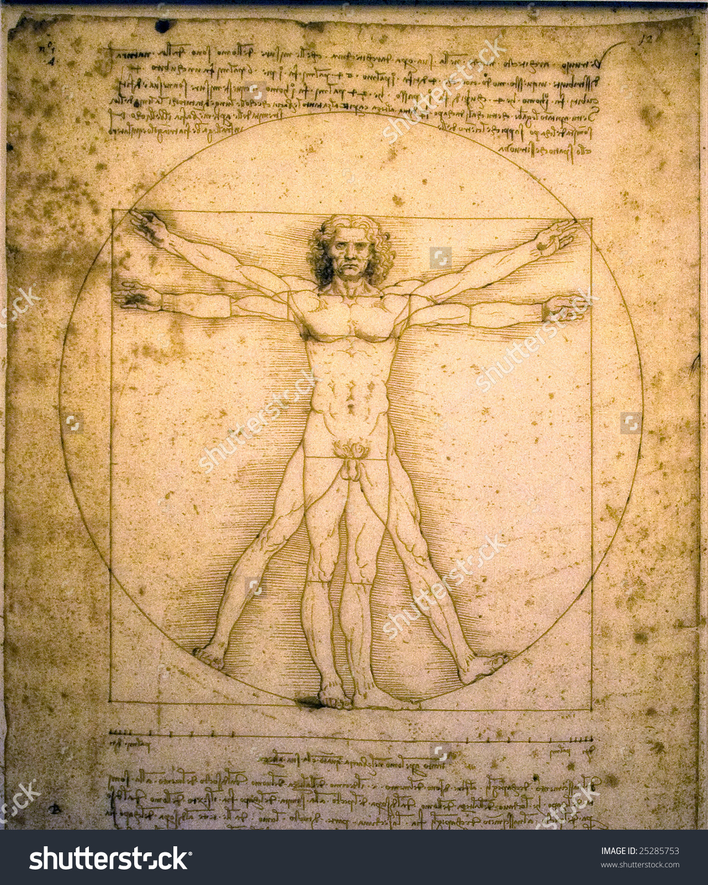
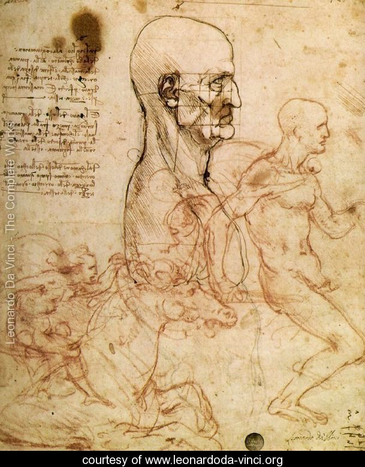

Little is known about Leonardo's early life. He spent his first five years in the hamlet of Anchiano, then lived in the household of his father, grandparents and uncle, Francesco, in the small town of Vinci. His father had married a sixteen-year-old girl named Albiera, who loved Leonardo but died young. In later life, Leonardo only recorded two childhood incidents. One, which he regarded as an omen, was when a kite dropped from the sky and hovered over his cradle, its tail feathers brushing his face. The second occurred while exploring in the mountains. He discovered a cave and was both terrified that some great monster might lurk there, and driven by curiosity to find out what was inside.

Leonardo-Da-Vinci
